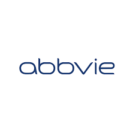
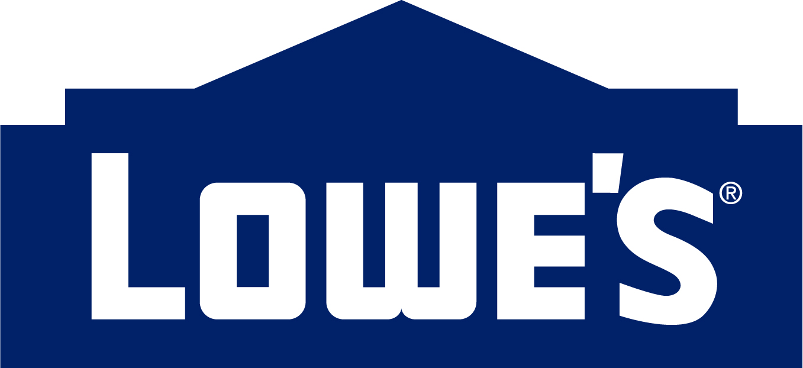

About me
Hi, I'm Sai Kumar Kothamasu, a passionate and seasoned Senior UI/React Developer with over 10 years of experience crafting seamless, intuitive, and visually appealing user interfaces.
I've worked with industry-leading companies where I contributed to scalable UI architectures, streamlined front-end performance, and implemented modern development practices.
What I'm doing
-

Web design
Modern and high-quality design made at a professional level.
-

Web development
High-quality development of sites at the professional level.
Clients

